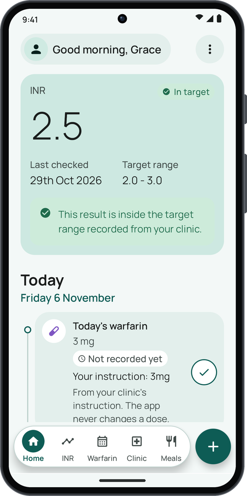
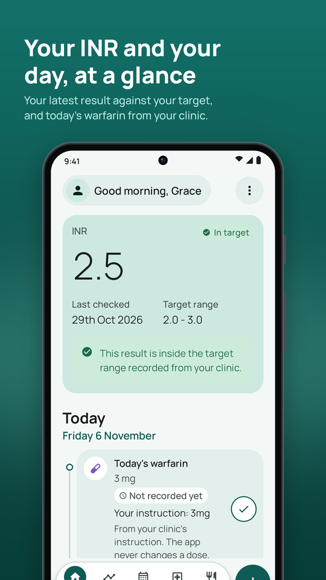
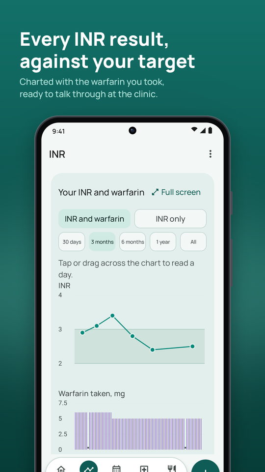
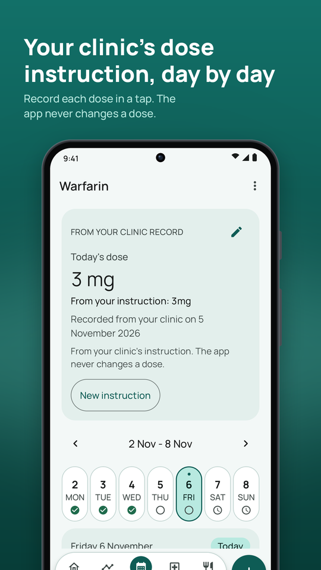
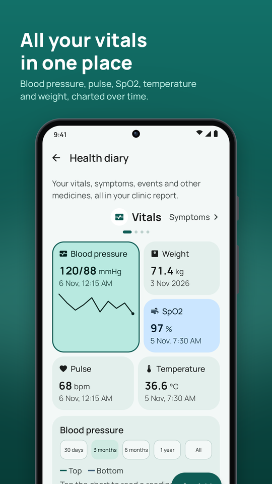
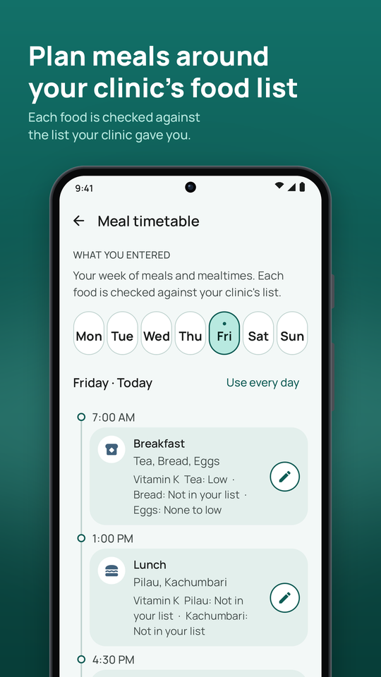
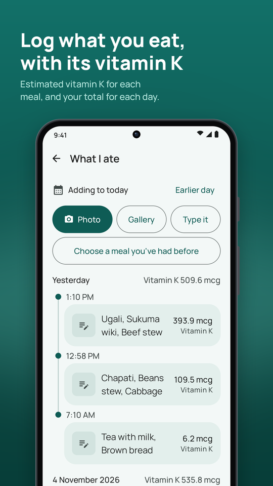
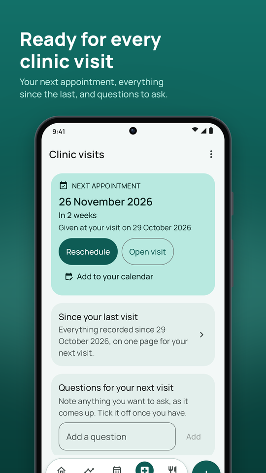
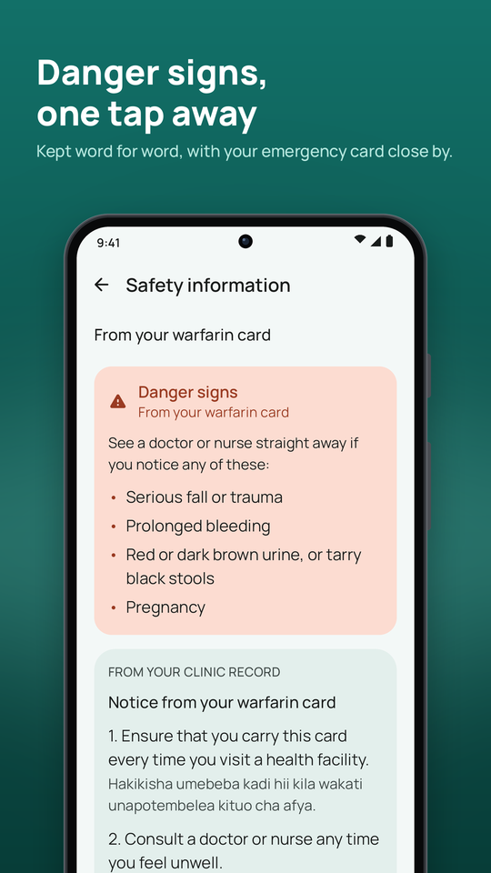
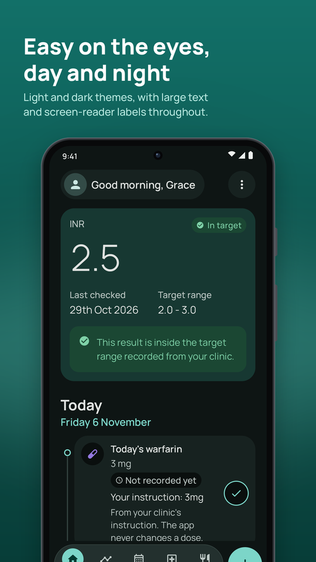

Your day in one timeline
Today’s warfarin from your clinic’s instruction, your meals and anything due, in time order. Record your dose in a tap.
Your INR results against your target, your clinic’s dose instruction, the doses you take, your clinic visits and your vitals, kept together on your phone.
Free to download on Android, with everything included for your first three months. No account needed.

Built around the card your anticoagulation clinic gives you, and the questions it asks at every visit.
Today’s warfarin from your clinic’s instruction, your meals and anything due, in time order. Record your dose in a tap.
Every result against the target range your clinic gave you, charted with the warfarin you took, and how many were in range.
Kept exactly as written, including alternating doses such as 5/2.5 and holds, and set out day by day with a week and month view.
Your next appointment and INR test, a summary of everything since your last visit, and the questions you want to ask.
Blood pressure, pulse, SpO2, temperature and weight, with symptoms, events and your other medicines, all in your clinic report.
A meal timetable checked against your clinic’s food list, and an estimate of the vitamin K in what you eat, always marked as an estimate.
The danger signs to watch for, word for word, one tap from Home, and an emergency card you can show on your lock screen.
Your daily warfarin reminder, one before your tablets run out, and reminders for INR tests and clinic visits, added to your calendar.
A PDF of your results, doses, visits and diary to print or share, and your records as CSV or JSON whenever you want them.
The app never calculates, suggests or changes a warfarin dose. It records what your clinic told you and what you took, so you can follow your clinic’s instruction and talk it through at your next visit.
Calm, legible screens in light and dark, with large text and screen-reader labels throughout.









Your health records are yours. INR Notebook keeps them on your phone, and we never receive them.
The app follows your phone’s language, or you can choose another in Settings. Your clinic’s danger signs and food list stay exactly as written.
INR Notebook is a personal record book, not a medical device, and it does not give medical advice. Always follow your doctor, pharmacist or anticoagulation clinic. In an emergency, including any danger sign of bleeding, contact your local emergency services or go to a hospital straight away.